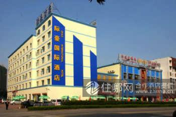

-
宜昌际豪国际酒店（葛洲坝店）
是由宜昌际豪国际酒店有限公司投资1800万人民币兴建的第一间旗舰店。营业面积达7000平方米，地处宜昌市市中心主干道—东山大道18号。距离国贸大厦1公里，乘坐9路公交至葛洲坝工程局站下车，可到达酒店。；距离宜昌火车站2公里，乘坐9路公交至葛洲坝工程局站下车，可到达酒店。；距离宜昌长途客运站1公里，乘坐9路公交至葛洲坝工程局站下车，可到达酒店。；距离宜昌三峡机场10公里，乘坐出租车约20分钟可到达酒店.
参考价格：¥200
-

宜昌如家快捷酒店（葛洲坝店）
位于宜昌市西陵区樵湖二路葛洲坝城区中心地段，毗邻夷陵广场、滨江公园、夜明珠码头、长江西陵峡风景区、三峡大坝和葛洲坝，距离火车站、长途汽车站、市中心和机场大巴停靠点5分钟车程，环境优美，出行便捷。酒店拥有商务大床房、标准房、大床房等，配备餐厅和停车位。距离三峡机场30公里，乘坐出租车约40分钟60元到达酒店；距离夷陵广场3公里，乘坐出租车约8分钟8元到达酒店；距离宜昌火车站3公里，乘坐出租车约8分钟8元到达酒店；距离宜昌长途汽车站4公里，乘坐出租车约10分钟12元到达酒店.
参考价格：¥170
-
宜昌中海酒店
位于市中心，地处繁华地带，毗邻宜昌火车站、长途汽车站，地理位置优越，交通便利。酒店秉持诚信、简约和舒适的服务理念，酒店以全新的设施、舒适的氛围和体贴的服务，成为商务旅客及度假游客的上佳之选。距离宜昌三峡机场20公里，乘坐机场大巴至清江大酒店下（大巴20元/位），步行约10分钟可到达酒店；；距离夷陵广场1公里，乘坐出租车约5分钟，5元左右可到达酒店；；距离宜昌火车站2公里，乘坐出租车约5分钟，5元左右可到达酒店；；距离宜昌长途客运站2公里，乘坐出租车约5分钟，5元左右可到达酒店.
参考价格：¥220